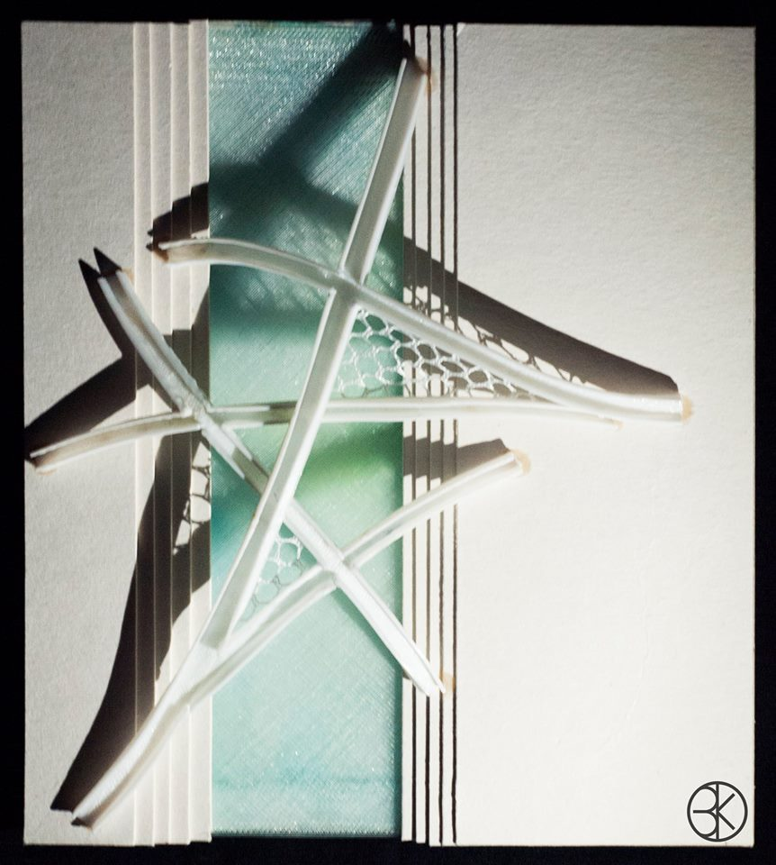
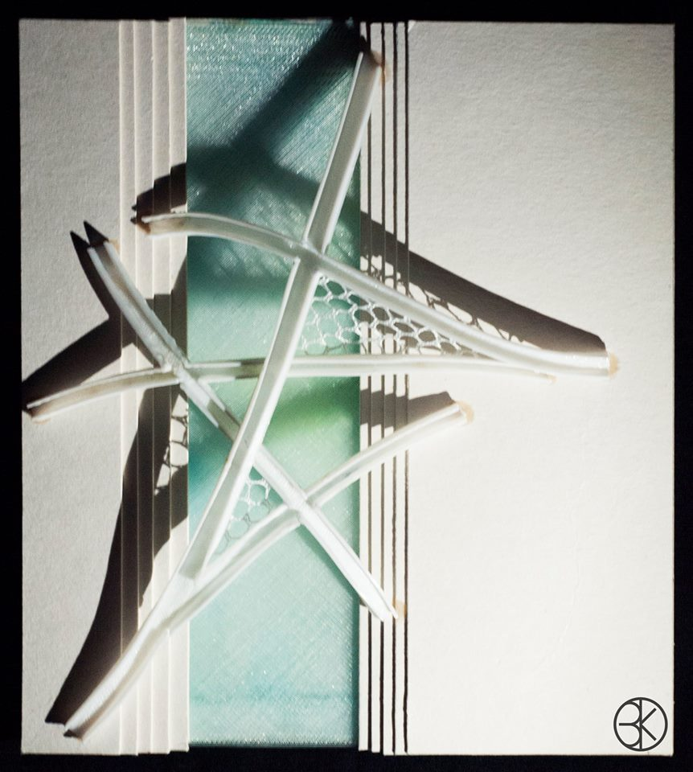

ENCARGOS PROFESIONALES
Durante el año 2019 surgió la posibilidad de realizar un par de maquetas en el ámbito profesional.
La primera fue una maqueta de uso comercial de un residencial plurifamiliar, que ayudaría a los clientes a entender la forma y ubicación de las viviendas, así como las dobles alturas.
La primera fue una maqueta de uso comercial de un residencial plurifamiliar, que ayudaría a los clientes a entender la forma y ubicación de las viviendas, así como las dobles alturas.


La segunda se trata de una ampliación en un colegio del municipio de Faura.


 
